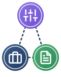

Fuori dall’aula, senza dati degli alunniPiani di lezione, schede didattiche, simulazioni di verifica, mappe concettuali, rubriche generali: nessun dato identificativo di specifici alunni.
GDPR, art. 4, punto 1 e art. 5, par. 1, lett. c · D.M. 166/2025, par. 3.2
Privacy: nessuna differenza per età o grado di scuola
- Non si trattano dati personali di studenti: sotto il profilo della protezione dei dati non sussistono differenze legate all’età o al grado scolastico.
- Il principio di minimizzazione è pienamente soddisfatto se i prompt sono del tutto astratti e privi di riferimenti anagrafici.
Cosa cambia: il quadro ordinamentale e pedagogico, per grado di scuola
Indicazioni Nazionali · D.M. 184/2023
Primaria e primo ciclo
Progettazione conforme alle Indicazioni Nazionali per il Curricolo e alle Linee guida STEM.
Sviluppo graduale del pensiero computazionale e della logica.
DigComp 2.2, comp. 1.2 · DigCompEdu, Area 6
Secondaria di I grado
Materiali per la didattica per competenze e l’alfabetizzazione mediatica.
In linea con il quadro europeo DigComp 2.2 e con l’Area 6 di DigCompEdu.
L. 107/2015 · D.Lgs. 59/2017 · L. 132/2025
Secondaria di II grado

- Autonomia e insegnamenti opzionali (L. 107/2015, art. 1, c. 28; D.Lgs. 59/2017, art. 10).
- Percorsi PCTO e ITS Academy (L. 132/2025, art. 24, c. 3).
- Curriculum dello Studente.